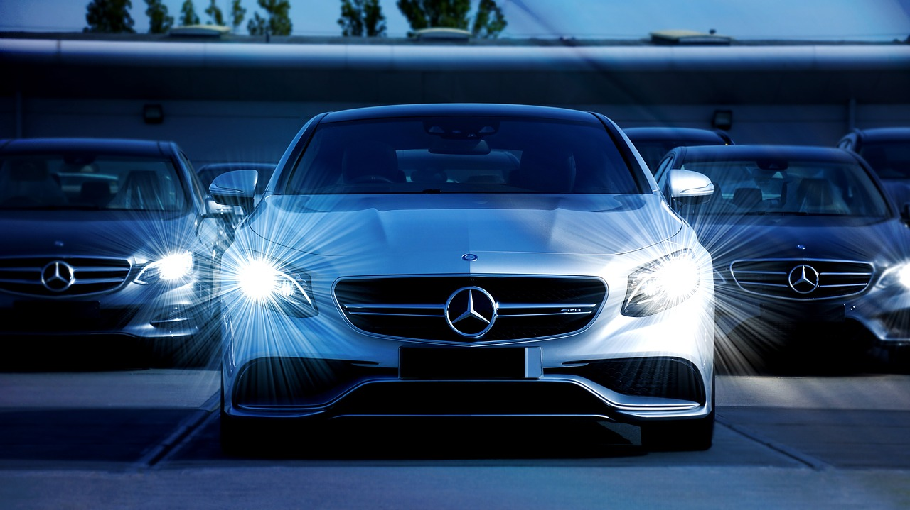

A wonderful experience to enjoy and make dreams happen
If you think about jeans or phones or television, we are used to new brands popping up right and left. But in the car industry, we grew up with Mercedes, BMW, General Motors, and Ford, and nobody can remember during his or her upbringing a new car brand coming to life.


Mercedes-Benz traces its origins to Karl Benz's creation of the first petrol-powered car, the Benz Patent Motorwagen, financed by Bertha Benz and patented in January 1886, and Gottlieb Daimler and engineer Wilhelm Maybach's conversion of a stagecoach by the addition of a petrol engine later that year. The Mercedes automobile was first marketed in 1901 by Daimler-Motoren-Gesellschaft (Daimler Motors Corporation) Emil Jellinek, an Austrian automobile entrepreneur who worked with DMG create.

On 28 June 1926, Mercedes-Benz was formed with the merger of Karl Benz and Gottlieb Daimler's two companies. Gottlieb Daimler was born on 17 March 1834 in Schorndorf. After training as a gunsmith and working in France, he attended the Polytechnic School in Stuttgart from 1857 to 1859. After completing various technical activities in France and England, he started work as a draftsman in Geislingen in 1862. At the end of 1863, he was appointed workshop inspector in a machine tool factory in Reutlingen, where he met Wilhelm Maybach in 1865. Throughout the 1930s, Mercedes-Benz produced the 770 model, a car that was popular during Germany's Nazi period.
Adolf Hitler was known to have driven these cars during his time in power, with bulletproof windshields. Most of the surviving models have been sold at auctions to private buyers.One of them is currently on display at the War Museum in Ottawa, Ontario. The pontiff's Popemobile has often been sourced from Mercedes-Benz.[6] In 1944, 46,000 forced laborers were used in Daimler-Benz's factories to bolster Nazi war efforts. The company later paid $12 million in reparations to the laborers' families. Mercedes-Benz has introduced many technological and safety innovations that later became common in other vehicles. Mercedes-Benz is one of the best-known and established automotive brands in the world.